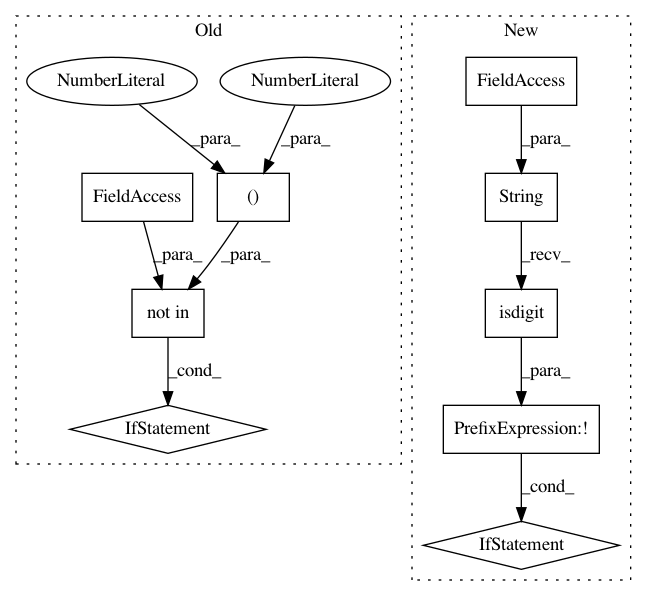

abe5d5444ef91f59c194622da3d5318565cfe1b7,pgmpy/models/DynamicBayesianNetwork.py,DynamicBayesianNetwork,get_slice_nodes,#DynamicBayesianNetwork#,242
Before Change
>>> dbn.add_edges_from([(("D",0),("G",0)),(("I",0),("G",0)),(("G",0),("L",0)),(("D",0),("D",1))])
>>> dbn.get_slice_nodes()
if time_slice not in (0, 1):
raise ValueError("The timeslice should belong only to 0 or 1")
return [(node, time_slice) for node in self.nodes()]
def add_cpds(self, *cpds):
After Change
>>> dbn.add_edges_from([(("D",0),("G",0)),(("I",0),("G",0)),(("G",0),("L",0)),(("D",0),("D",1))])
>>> dbn.get_slice_nodes()
if not str(time_slice).isdigit():
raise ValueError("The timeslice should be a positive value greater than or equal to zero")
return [(node, time_slice) for node in self.nodes()]
def add_cpds(self, *cpds):
In pattern: SUPERPATTERN
Frequency: 3
Non-data size: 9
Instances
Project Name: pgmpy/pgmpy
Commit Name: abe5d5444ef91f59c194622da3d5318565cfe1b7
Time: 2015-07-28
Author: abhor902@gmail.com
File Name: pgmpy/models/DynamicBayesianNetwork.py
Class Name: DynamicBayesianNetwork
Method Name: get_slice_nodes
Project Name: pgmpy/pgmpy
Commit Name: abe5d5444ef91f59c194622da3d5318565cfe1b7
Time: 2015-07-28
Author: abhor902@gmail.com
File Name: pgmpy/models/DynamicBayesianNetwork.py
Class Name: DynamicBayesianNetwork
Method Name: get_interface_nodes
Project Name: pgmpy/pgmpy
Commit Name: abe5d5444ef91f59c194622da3d5318565cfe1b7
Time: 2015-07-28
Author: abhor902@gmail.com
File Name: pgmpy/models/DynamicBayesianNetwork.py
Class Name: DynamicBayesianNetwork
Method Name: get_intra_edges